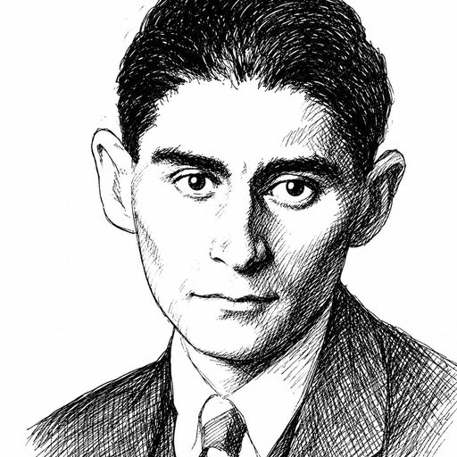

Franz Kafka on airport securityS. had submitted his outer coat, his leather belt, and the small tin container holding his mints to the gray plastic bin, fully expecting that this ritual of divestment, performed with meticulous care under the gaze of the uniformed guard who barely glanced at him, would grant him immediate passage to the waiting hall beyond.
Yet when he stepped through the illuminated frame, which emitted no sound whatever, the official waved him to the side, not with anger, nor even with suspicion, but with a flat, indifferent gesture that suggested S. had failed an unstated requirement which could only be revealed to him after he had waited in the small marked square on the floor until such time as an inspector of higher rank became available.
S. stood quietly, holding his trousers up with one hand, watching his private possessions drift slowly into the dark throat of the machine, where they remained hidden for so long that he began to wonder if they had been confiscated permanently, though the guard assured him, without looking up from his ledger, that everything was proceeding according to the established order and that his turn to be searched would come as soon as the previous traveler, who had been standing in the adjacent enclosure since early morning, was finally cleared.
Also on airport security: Anthony Bourdain.